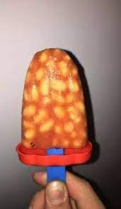

Beansicle

Description
This is a recipe for a refreshing, scrumptious and cooling beansicle!
Ingredients
- 1 can of red beans
- 1 soul of prawn
Steps
- Empty red beans from tin into popsicle containers.
- Transfer soul of prawn into one lucky beansicle.
- Reap your rewards in about 5 hours